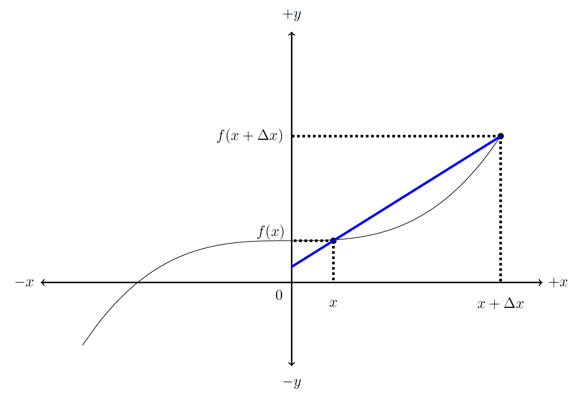
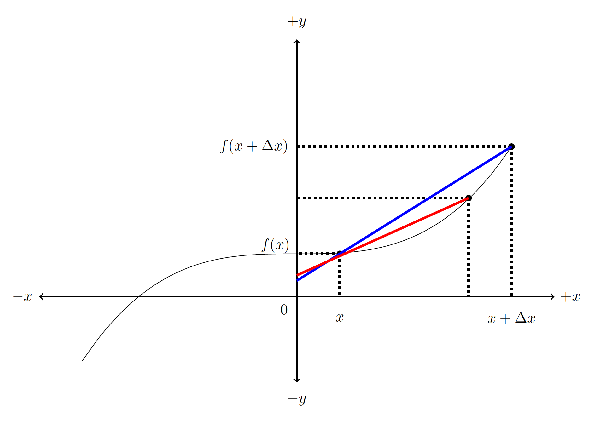
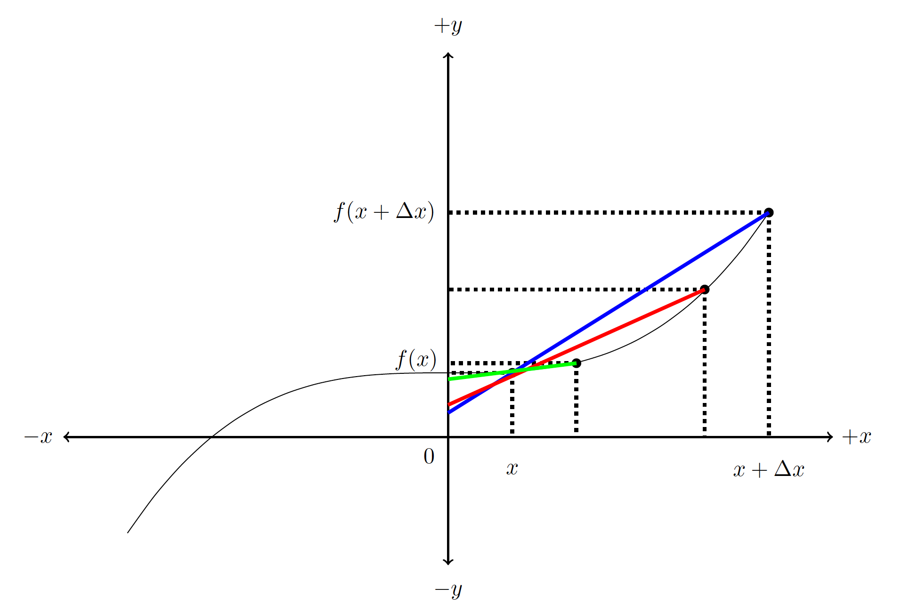

B2.1 Introduction to the Derivative#
B2.1.1 Conceptual Approach: The slope of a graph#
Consider an arbitrary, smooth function \(f(x)\). Take two data points \(x\) and \(x + \Delta x\) such that the two points are separated by \(\Delta x\) , and the corresponding function values are \(f(x)\) and \(f(x + \Delta x)\). If we want to estimate the slope at point \(x\), we can to an approximation say that the slope can be represented as a straight-line slope between the two data points. That slope is given by (remember: rise over run)
In the figure below, we illustrate this concept where the blue line is the straight line with the slope given by the above equation.
We notice that the slope calculated by the differences\(^*\) is not exactly the slope of the function \(f(x)\) at \(x\), but only an approximation. This approximation may be good or bad depending on the function and the appliction we need the slope for. It may not take much imagination to think that the approximation of the slope at \(x\) could be improved if we picked a data point closer to \(x\) as shown in the next figure. The slope of the red line is an improved approximation for the slope at point \(x\) compared to the slope of the blue line.
\(^*\)by differences we mean quantities that are given by \(\Delta \) which we read as “a change in ” or as “a difference in”.
We can continue this process of chosing smaller and smaller \(\Delta x\) to improve our estimate as shown in the next figure, where the slope of the green line is a much better approximation for the slope of \(f(x)\) at \(x\) compared to the slopes of either the blue or red lines.
It should be evident from these figures that as we choose smaller and smaller values of \(\Delta x\), we obtain a better approximation for the slope of \(f(x)\) at \(x\). The slopes of the straight lines are referred to as the average slope between two data points, whereas the actually slope at the given point is the instantaneous slope. The line tangent to the data point is the straight line passing through that point with a slope that is the instantaneous slope at that point.
B2.1.2 Definition of the Derivative#
The derivative is a mathematical tool to obtain the instantaneous slope provided we know the analytical function \(f(x)\). Based on the above reasoning, we will let \(\Delta x\) become really small, in fact, we will let it approach zero. We define the derivative as (read as: the derivative of \(f\) with respect to \(x\))
In words, we may say that the derivative is the instantaneous change of function f at location x with respect to x.
Warning#
We must point out that the \(\frac{d}{dx}\) is a mathematical operator and not a fraction. We read this as “the derivative of \(f\) with respect to \(x\)”.
The equation is often written as
but I wrote it as \( \frac{d}{dx}[f]\) to enforce the notion that we are dealing with an operator \(\frac{d}{dx}\) acting on a function \([f]\). In the future, we will often omit the \([]\) as it will be understood to be an operator acting on a function.
Other notations#
The derivative is sometimes written as
where it is understood that the derivative is with respect to the variable \(x\) (read as “f-prime”). This notation was introduced by Lagrange, while the notation
was introduced by Leibniz.
Calculus was, independently of each other, developed by Leibniz and Newton. Newton also has a notation, which we will use in physics, but it is not a general notation like the ones by Lagrange and Leibniz. Instead, Newton used a specific notation when the derivative was taken with respect to time as a variable:
where it is now understood that the derivative is with respect to \(t\) (read as”f-dot”).
A great discussion regarding Newton vs. Leibniz from the Big Bang Theory.
Example 1
Find the derivative of \(f(x) = x^2\).
Solution
We will use the above definition of the derivative and the knowledge of the analytic function. Since \(f(x) = x^2\), we have that \(f(x+ \Delta x) = (x + \Delta x)^2 = x^2 + 2x~\Delta x + (\Delta x)^2\), which we will need for calculating the derivative according to the definition. From the definition we have
Insert our particular function of interest:
where we inserted our expressions for \(f(x)\) and \(f(x + \Delta x)\).
We can eliminate \(x^2\) as it subtracts out:
If we divide through both terms in the numerator by \(\Delta x\), we get
Now we can execute the limit evaluation by setting \(\Delta x = 0\) (we could not do that before since \(\Delta x\) was in the denominator):
or
Answer
The derivative of \(f(x) = x^2\) with respect to \(x\) is
Example 2
Find the instantaneous slope of \(f(x) = x^2\) at \(x = 3\).
Solution
The instantanous slope of a function at a given point is the derivative evaluated at that point. We write this as
Since our derivative is \(\frac{df}{dx} = 2x\), we have
Answer The instantanous slope of \(f(x) = x^2\) at \(x = 3\) is 6.
Use the approach in Example 1 to find the derivative of \(f(x) = x^3\)
Use the approach in Example 2 to find the instantanous slope of \(f(x) = x^3\) at \(x = 2\).
B2.1.3 Application Examples: Momentum and Force#
If a net force is applied to a particle its momentum will change. This is quantified through Newton’s 2nd law:
The graphical implication is: on a graph showing momentum vs. time, the slope represents the force.
Let us consider two cases here: one with a constant net force and one with a varying net force.
Case 1: Constant Force#
In this case, the slope on a momentum vs. time graph must be constant (a straight line). Using the little Python script below, we can creat such an example graph.
Show code cell source
import numpy as np
from matplotlib import pyplot as plt
from math import pi
t = np.arange(0,10.0,0.1)
p = 3*t
plt.plot(t,p)
plt.plot(2,3*2, 'ko')
plt.plot(8,3*8, 'ko')
plt.hlines(y=6,xmin=2,xmax=8,color='k', linestyle='--')
plt.vlines(x=8,ymin=6,ymax=24,color='k', linestyle='--')
plt.xlabel('Time (s)')
plt.ylabel('Momentum (kgm/s)')
plt.show()
What is the magnitude of the force acting on the object according to the momentum vs. time graph shown above? Since the force is represented by the slope, we can choose two points along the graph to evaluate the slope:
Case 2: Varying Force#
Let us consider a net momentum given by a magnitude of
where \(t\) is time. What is the instantaneous force at \(t = 5\)s ?
Well, imagine that we do not know calculus. Then we would approximate the force with the slope a \(t = 5\) s. Let us plot it:
Show code cell source
import numpy as np
from matplotlib import pyplot as plt
from math import pi
t = np.arange(0,10.0,0.1)
p = 0.5*t**3
plt.plot(t,p)
plt.plot(2,0.5*2**3, 'ko')
plt.plot(8,0.5*8**3, 'ko')
plt.hlines(y=6,xmin=2,xmax=8,color='k', linestyle='--')
plt.vlines(x=8,ymin=0.5*2**3,ymax=0.5*8**3,color='k', linestyle='--')
plt.plot(4,0.5*4**3, 'ro')
plt.plot(6,0.5*6**3, 'ro')
plt.hlines(y=0.5*4**3,xmin=4,xmax=6,color='r', linestyle='--')
plt.vlines(x=6,ymin=0.5*4**3,ymax=0.5*6**3,color='r', linestyle='--')
plt.xlabel('Time (s)')
plt.ylabel('Momentum (kgm/s)')
plt.show()
We could approxiate the slope at \(t = 5\) by picking two points, say the values at \(t = 2\) s and \(t = 8\) s. However, we would get an even better approximation by picking the two points at \(t = 4\) s and \(t = 6\) s. Now that we know calculus, we recognize this approach as leading to the derivative, which is how the force and momentum are related. The magnitude of the force is
Inserting the expression for the momentum, we get:
This is the general expression for the net force. We can evaluate it at \(t = 5\) s to obtain the answer to the question:
where we used two significant figures.